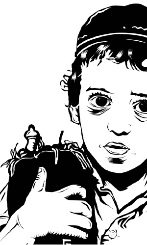
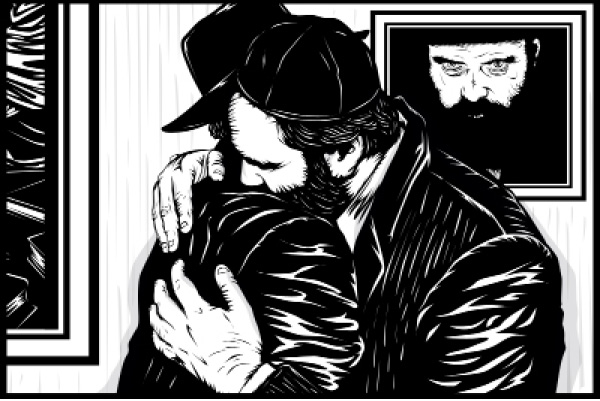

Pictures at a Chassidic Exhibition
The artist Yosef Yitzchak Fisher was educated in his youth in Chabad institutions and absorbed the sweetness of the Chassidic world. As the years passed , he became a well-known artist, yet he felt a certain calling to create an art display on the Chassidic world where he had been raised. After two long years of work, he presented his “ Tzama Lecha Nafshi” exhibition at an art gallery located in the heart of Tel Aviv , highlighted by the creative image of a three year-old boy after his upshernish, holding a Torah scroll .

Translated by Michoel Leib Dobry
Last month, a most unique presentation of Chassidic street art took place in Tel Aviv, entitled “Tzama Lecha Nafshi.” The exhibition succeeded in creating a public relations sensation, resulting in about five hundred people reserving places for the opening event. The display was highlighted by works of art from the Chassidic world.
During the exhibition, there was a special evening with original “Nicho’ach” albums of Chabad niggunim playing in the background on an old phonograph.
At the entrance to the exhibition, we met the artist responsible for these marvelous expressions of creativity, Yosef Yitzchak Fisher of Hertzliya, who proceeded to tell us about his work and how it all came into being.
During the exhibition, there was a special evening with original “Nicho’ach” albums of Chabad niggunim playing in the background on an old phonograph.
At the entrance to the exhibition, we met the artist responsible for these marvelous expressions of creativity, Yosef Yitzchak Fisher of Hertzliya, who proceeded to tell us about his work and how it all came into being.
CONVEYING THE MAGIC OF THE CHASSIDIC WORLD
Yosef Yitzchak Fisher is a most unconventional artisan. He still calls his creative work “street art,” despite the fact it was now appearing in a prestigious gallery in Tel Aviv. He strictly adheres to a very simple style, yet he consistently makes a statement with every production.
He was born to Chabad parents who had become Chassidim of the Rebbe thirty years ago, and they gave him the name Yosef Yitzchak. In his youth, he learned in Chabad schools until he went to yeshiva k’tana, but life’s tug-of-war pulled him in many different directions. Nevertheless, he never neglected his Chabad upbringing, and he felt that it was an integral part of his Jewish existence. Now, he had decided to make a whole presentation dealing with Chassidus and Chassidim. The exhibition displays were also designed to convey a message to those currently not Torah observant, most of whom were unfamiliar with the magic of the Chassidic world.
“I used to draw throughout my entire childhood,” Fisher told us. “Ever since I was a boy, I remember doing artwork. My first sketches were published in a Chabad magazine in Eretz HaKodesh. My mother would keep copies of the magazine containing my drawings.
“When I grew older, at the age of fourteen, I discovered a new art style and I began working with graffiti art. In the beginning, I would merely scribble, but I slowly developed greater skills in drawing letters of the Tanach and the like. I learned at depth about the meaning behind each letter, and this is I how I started to get into the Jewish aspect of art. I had essentially begun to deal with the visual side to Judaism, and this led me to Chassidic folklore.
“After working in graffiti art, I started dealing with a technique of carving to create an advanced form of art. Using this technique, we take a large black sticker, fashion the image upon it with cut shapes, and then remove the outlined pieces from the sticker and attach them to the wall. Instead of drawing on the sticker itself, you merely cut the shapes out. These drawings can be placed on a wall, a placard, or in a frame. I started working on a line of drawings – some were placed in public places, others were framed.
“I drew a picture of a Chassid flying through the air, and I fastened it to a wall at Kikar HaSus, near the HaMashbir L’Tzarchan department store in Yerushalayim. This is a very vibrant place, located at the entrance to the Ben-Yehuda pedestrian mall, and the picture of the Chassid was designed to convey a message. I wanted everyone to understand that Chassidim are also people with personalities behind their uniform appearances. This Chassid looks joyous as he flies through the air with a most humane expression, and this enables the observer to see him as a person similar to himself.”
How did you come from street art to creating a Chassidic exhibition?
“Artwork that is hung in the street remains there, and that’s the end of it. I wanted to express something more, to reach more people. It is very important to me to convey an idea on the beauty of the Chassidic world. In the final analysis, this is the world from which I came and where I was raised in my youth. I wanted to create more in the Chassidic sphere. During the last two years, I have been focusing upon illustrative drawings based on the world of Judaism.”
How did the idea first come into being?
“This is something that comes from within, something that truly speaks to me on this matter. I thought about how it would be possible to show the magic of this world specifically through art. People who don’t know about or relate to this world have great difficulty connecting to it through indirect accounts. However, visual artwork enables a person to feel this world. All these artistic creations are most inspiring and each contains its own unique message.
“From a very young age, I dreamt of working on carved images. Over a period of eighteen months, I designed an authentic Jewish representation of a child holding a Torah scroll. The inspiration came from a photograph of me at the age of three, after my upshernish on Mt. Miron, standing with a Torah scroll in my hand. I decided to create a piece of art depicting a Jewish child.”
And how did the exhibition actually get started?
“I decided to make an exhibition of my street art creations that present Jewish and Chassidic themes. There have been no serious examples of artistic expression in this sphere, and I felt that there was much more to give here. People can easily forget that just 130 years ago – prior to the start of the Enlightenment Movement – virtually every Jew was Orthodox. I show this to them in an unconventional manner, and it arouses a genuine sense of longing. I received numerous responses to my artwork, including from non-religious Jews, and I began to realize what moved them.”
Exactly what kind of reactions have you received?
“I receive reactions all the time from every direction. There were some very powerful reactions from the non-chareidi world. People said to me with great surprise, ‘What did you do with those religious figures?’ While they simply couldn’t understand this association between art and images of chareidim, it still seemed to captivate them. They saw a person with whom they could connect; not just some distant character. Many people living in Yerushalayim don’t have positive interactions with the ultra-Orthodox; usually it’s quite minimal. Now, they suddenly have an opportunity to see and emotionally connect with something that they had never known before.”
Have there also been reactions from the ultra-Orthodox sector?
“Most definitely. Many chareidim have expressed interest in my exhibition. The rav of our community, the Rebbe MH”M’s shliach in Hertzliya, Rabbi Yisroel Halperin, took a special interest in the exhibition and he promised to come and visit. He told me that this was a truly holy project and he gave me a great deal of encouragement.
“In general, there is a great interest in this exhibit. I had made other displays of my artwork, but none had ever aroused as much attention as this one. I felt an aura of tremendous Divine Providence throughout its preparations.”
RELATING TO THE WORLD OF THE ORTHODOX WITHOUT BIAS
What do you feel when you’re producing a Chassidic work of art?
“To take a chunk of raw black material and turn it into a creative artistic image is almost a form of yesh me’ayin. All the entries in the exhibition were created with a cutting technique; they appear framed as complete works of art. These include fifteen original creations on the Chassidic sector. Some express the human side of Chassidim, while others articulate abstract concepts such as Chassidic childhood and Chassidic thought – all kinds of situations that connect to a sense of genuine authenticity. Take a child, for example: When you dress a child in Chassidic garb, this still doesn’t make him a Chassidic child. You have to give him some inner content, just as you find in all people. I even pose questions on faith during the presentation.”
How does one convey an artistic message of faith?
“While it’s impossible to believe in something visually, there’s a very large mural displaying a giant nine-foot image of a Chassid, his face shaded and his hand partially open. I feel that this drawing conveys something very deep, expressing a person’s inner thoughts about his faith. When I draw chareidi figures, I feel that I’m drawing my family, what I was raised on. When you pour your feelings into your artistic talents, you produce a genuine work of art.”
What do you think about the whole concept of artistic creation?
“The work doesn’t begin with a story. It starts with something far more profound that you want to express; the story comes later. For example, a large piece of art filled with Chassidic children – twenty-five of them in one picture, each expressing a different emotion, serious, happy, hostile, clownish, wants to go, wants to stay. It’s here where I transmit the human side to the culture I was raised in. This is how we communicate emotions, concerns, conflicts without any high and mighty talk. When you look at someone standing before you as an equal, you can relate him as a human being. Similarly, you can see it in the artwork I did of the Chassid flying through the air, near “HaMashbir” in Yerushalayim: It shows a person dressed in black who doesn’t seem remote or serious, but happy and with a sense of humor.”
How do you explain the media attention surrounding your exhibition?
“I don’t think that there’s been enough attention given to this form of expression. People have never been given the opportunity to open up and connect with a whole new world, and this exhibition provides that without bias.”
What do you want to express in your art work?
“I hope that I’ll be able to introduce just one person to this wealth of knowledge – Chassidus, Tanya – something that countless people have never experienced. If this exhibition gets even one person to want to learn about this rich and inspiring world, it will have been worth all the effort. This is my shlichus, my mivtzaim, and I hope that the Rebbe is pleased.
“I have really tried to prepare and hold this exhibition at the highest standard possible, constantly maintaining its central theme of joy. I have done the very best I could, and I hope that the Rebbe is satisfied with the end results.”

Sholom Ber Crombie. "Pictures at a Chassidic Exhibition." Beis Moshiach, no. 893 (August 19, 2013).